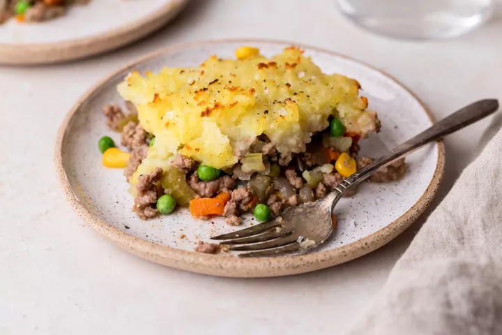

Shepherd's Pie

A easy and delicious dinner!!
Filling Ingredients
- 1 medium onion, chopped (about 1 1/2 cups)
- 1 to 2 cups mixed vegetables, such as diced carrots, corn, or peas
- 1 1/2 pounds ground round beef
- 1/2 cup beef broth
- 1 teaspoon Worcestershire sauce
Mashed Potato Topping Ingredients
- 3 large (1 1/2 to 2 pounds) potatoes , peeled and quartered
- 4 tablespoons (1/2 stick) butter
- Cheddar Cheese
Directions
- Place the peeled and quartered potatoes in medium sized pot. Cover with at least an inch of cold water. Add a teaspoon of salt. Bring to a boil, reduce to a simmer, and cook until tender (about 20 minutes).
- Preheat the oven to 400°F.
- While the potatoes are cooking, add oil in a large sauté pan on medium heat. Add the chopped onions and cook until tender, about 6 to 10 minutes.
If you are including vegetables, add them according to their cooking time. Carrots should be cooked with the onions, because they take as long to cook as the onions do.
If you are including peas or corn, add them toward the end of the cooking of the onions, or after the meat starts to cook, as they take very little cooking time.
- Add ground beef to the pan with the onions and vegetables. Cook until no longer pink. Drain the pan of excess fat, if necessary (anything more than 1 tablespoon). Season with salt and pepper.
Add the Worcestershire sauce and beef broth. Bring the broth to a simmer and reduce heat to low. Cook uncovered for 10 minutes, adding more beef broth if necessary to keep the meat from drying out.
Taste the cooked filling and, if needed, add more salt, pepper, Worcestershire, or other seasonings of your choice.
- Spread the cooked filling in an even layer in a large baking dish (such as a 9 x 13-inch casserole.
Spread the mashed potatoes over the top of the ground beef. Rough up the surface of the mashed potatoes with a fork so there are peaks that will get well browned. You can even use a fork to make creative designs in the mashed potatoes.
- Sprinkle grated cheddar cheese over the top of the mashed potatoes before baking.
- Place in a 400°F oven and cook until browned and bubbling, about 30 minutes. If necessary, broil for the last few minutes to help the surface of the mashed potatoes brown.
(Be careful when broiling using Pyrex or glass dishes, they have been known to shatter under the high heat of the broiler. It's not a worry if you are using a ceramic or metal casserole dish.)